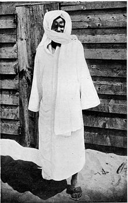

IL GRANDE FONDATORE DEL MURISMO

La città di touba situata nel mezzo territorio Senegalese, a 193km da Dakar,la città di Touba é stata fondata nel 1887 da Cheikh Ahmadou Bamba Chi é?
Cheikh Ahmadou Bamba nato nel 1853 – Diourbel sparito nel 19 luglio 1927 è stato un leader religioso senegalese di fede musulmana,
fondatore della confraternita muride (Muridiyya).
Cheikh Ahmadou Bamba Mbacké, noto più semplicemente come Ahmadou Bamba, o come Aamadu Bamba Mbàckè o Serigne Tuubaa (che significa "Sceicco di Touba") in wolof, e come Shaykh Aḥmad ibn Muḥammad ibn Ḥabīb Allāh oppure Khadīmu 'l-Rasūl (che significa "Il servo del messaggero") in arabo.
Serigne Touba è nato nel villaggio Mbacké fondato dal suo bisnonno Muhammad al-Khayr.
Parente del potente capo della tribù wolof Lat Dior e membro del ricco clan di Mbacké, rinunciò presto alla sua nobile stirpe e scelse un cammino di devozione religiosa.
Alla scuola coranica, apprese l'insegnamento del Corano e d'altre materie teologiche.
Solo dopo la morte del padre, avvenuta nel 1883, Ahmadou Bamba poté rivelare per intera la propria personalità mistica dedicandosi interamente a una vita santa e orientata sull'imitazione del profeta.
LA MOSCHEA DI TOUBA

Oggi di Touba, cittá santa senegalese fondata nel 1887 da Cheikh Ahmadou Bamba Mbacke.
Vi si arriva molto prima di entrare nel centro abitato vero e proprio.
L’ingresso nella città santa di Touba viene annunciato da un arco in muratura che delimita la regione in cui vige l’amministrazione di questa città autonoma, con leggi proprie sia per l’amministrazione della terra, sia per il commercio, sia per l’edificazione.
Non si può fumare, non si possono bere alcolici e bisogna ovviamente purificarsi.
Questa Moschea fu fondata da Cheikh Amadou Bamba nel 1888, sempre lui fondò nel 1912 la confraternita del murid.
Un gruppo religioso legato anche alla più importante etnia del Senegal, i wolof. La confraternita è diventata negli anni un vero e proprio ganglio del potere.
In Senegal i murid sono potentissimi e i capi religiosi sono spesso legati ai leader politici e questi ultimi, a loro volta, magari sono membri della confraternita.
Un legame che è potenzialmente una sorta di contro circuito.
Per ora però il Senegal ha saputo restare uno stato laico, ha saputo far convivere la religione maggioritaria con altre fedi, ha saputo non relegare le donne ai margini della società.
Non è poco di questi tempi in cui le religioni, e in particolare quella musulmana, rischiano di prendere una deriva sempre più integralista.
A Touba questo miracolo lo si respira, lo si osserva, ce ne si stupisce. E ce ne si compiace.